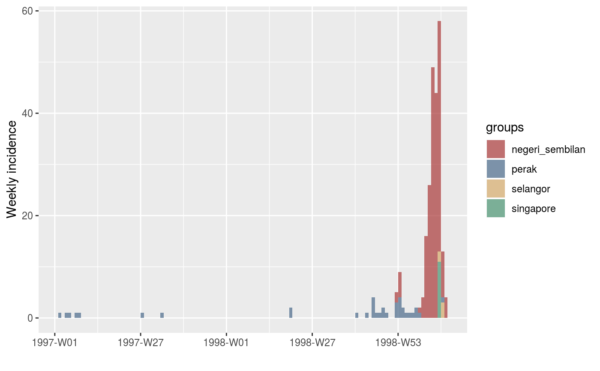

These data describe incidence of human cases of Nipah virus encephalitis in Malaysia and Singapore from January 1997 through April 1999.
nipah_malaysia
A data frame with 49 rows and 5 columns
Onset date (weekly)
Number of cases (Perak State, Malaysia)
Number of cases (Negeri Sembilan State, Malaysia)
Number of cases (Selangor State, Malaysia)
Number of cases (Singapore)
Pulliam et al. (2011)
J.R.C. Pulliam, et al. 2011. Agricultural intensification, priming for persistence and the emergence of Nipah virus: a lethal bat-borne zoonosis. _Journal of the Royal Society Interface_, 9(66), 20110223. https://doi.org/10.1098/rsif.2011.0223
## show first few weeks of Dengue incidence head(nipah_malaysia)#> # A tibble: 6 x 5 #> date perak negeri_sembilan selangor singapore #> <date> <int> <int> <int> <int> #> 1 1997-01-04 0 0 0 0 #> 2 1997-01-11 1 0 0 0 #> 3 1997-01-18 0 0 0 0 #> 4 1997-01-25 1 0 0 0 #> 5 1997-02-01 1 0 0 0 #> 6 1997-02-08 0 0 0 0## convert data to incidence object and plot epicurve using the incidence package library(incidence) cases <- subset(nipah_malaysia, select = c("perak", "negeri_sembilan", "selangor", "singapore")) i <- as.incidence(cases, dates = nipah_malaysia$date, interval = 7L) plot(i)